Pass by Value và Pass by Reference trong Java

Pass by Value và Pass by Reference trong Java
Hôm trước có bắt gặp cuộc tranh luận nảy lửa trên một group Skype về Java Developer. Nội dung tranh luận xoay quanh việc Java có pass-by-reference hay không.
Trước khi trả lời câu hỏi này, chúng ta cần hiểu sự khác biệt giữa pass-by-value(tham trị) và pass-by-reference(tham chiếu)
Pass-by-value
Pass-by-value được hiểu là khi bạn pass biến vào làm argument cho một function, chương trình sẽ không dùng thẳng biến đó mà sao chép giá trị và đưa cho function, và hệ quả là dù bên trong function xảy ra chuyện gì thì biến thực tế vẫn được bảo toàn
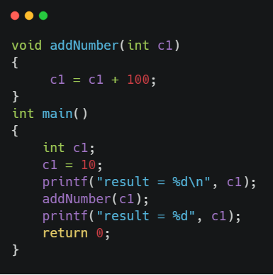
Kết quả
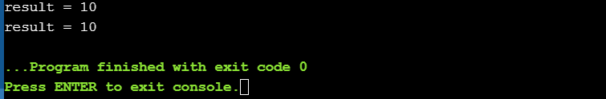
Pass-by-reference
Ngược lại với Pass-by-value, khi bạn pass biến vào làm argument cho một function, chương trình sẽ đưa thẳng biến đó cho function tùy ý xử lý, và hệ quả là nếu bên trong function mà thay đổi giá trị của argument thì biến thực tế bên ngoài cũng bị thay đổi, vì trong trường hợp này biến bên ngoài và biến(argument) của function là một.
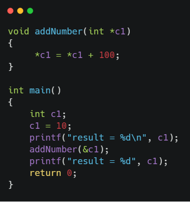
Kết quả
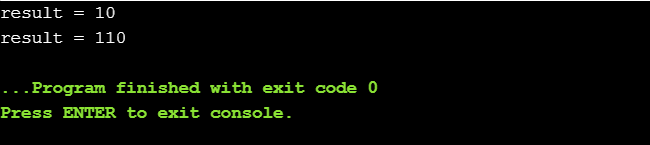
Có thể xem hình minh họa bên dưới để hiểu rõ hơn
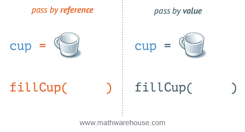
Vậy phần xử lý phía sau(behind the scenes) giữa Pass-by-value và Pass-by-reference thì ra sao. Để giải thích cho phần này, tôi tạm dùng cách C/C++ làm việc để diễn tả.
Dưới đây là mô hình hóa việc lưu trữ dữ liệu của các biến trên bộ nhớ. Ở đây ta có biến myAge có giá trị 14 được lưu ở bộ nhớ có địa chỉ 106
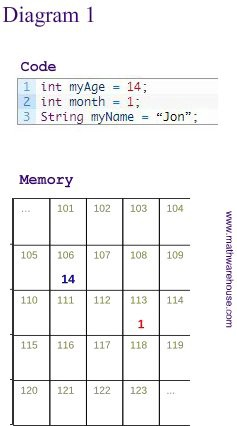
Khi Pass-by-value, chương trình không pass thẳng biến myAge ở ô 106, mà nó sẽ sao chép giá trị(14) của ô 106 sang ô 152, và function calculateBirthYear sẽ chỉnh sửa ô nhớ 152, và ô 106 sẽ luôn được an toàn khỏi bàn tay của function calculateBirthYear.
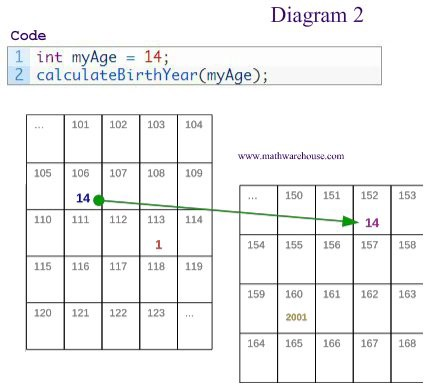
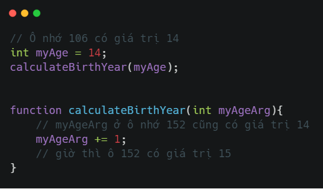
Nhưng khi Pass-by-reference, chương trình sẽ truyền thẳng địa chỉ ô nhớ vào function, bạn sẽ phải có kiến thức về Pointer trong C/C++ để hiểu cú pháp
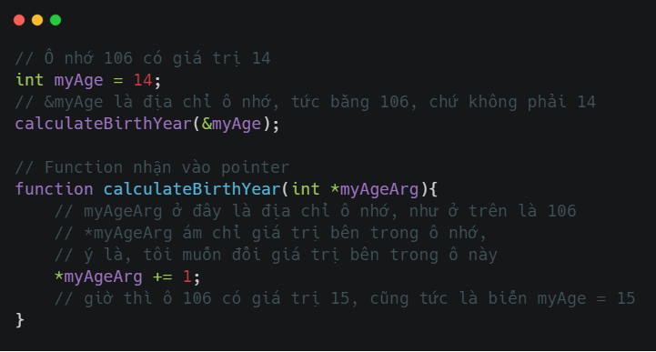
Kiến thức về Pass-by-value và Pass-by-reference là kiến thức chung, không riêng ngôn ngữ nào, nhưng ở đây tôi chọn C/C++ vì các thuật ngữ của nó dễ hiểu nhất, không gây nhầm lẫn cho người đọc. Với các ngôn ngữ bậc cao như Python, Java, C#,… thì khái niệm Pointer không còn, nhưng Pass-y-reference vẫn được một số ngôn ngữ thể hiện ở mức đơn giản và đỡ hack não hơn Pointer.
Dưới đây là ví dụ trong C# với từ khóa ref để Pass-by-reference
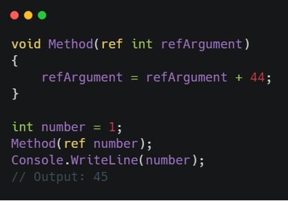
Vậy với Java thì sao?
Theo một cách hiểu nhất định và là cách hiểu mà đa phần đồng ý, thì Java không có Pass-by-reference !
Đâu đó các bạn sẽ đọc được những bài như https://viettuts.vn/java/truyen-gia-tri-va-tham-chieu-pass-value-va-pass-reference-trong-java , họ cho rằng khi bạn truyền giá trị kiểu Primitive vào function thì nó sẽ là Pass-by-value và khi truyền giá trị kiểu Reference thì nó sẽ là Pass-by-reference.
Để hiểu hơn sự khác nhau giữa Primitive Type và Reference Type, các bạn có thể đọc ở link sau https://javarevisited.blogspot.com/2015/09/difference-between-primitive-and-reference-variable-java.html
Vế thứ nhất, khi bạn truyền giá trị kiểu Primitive vào function thì nó sẽ là Pass-by-value thì không có gì bàn cãi, Java không có pointer như C/C++, cũng chẳng có ref như C#, vậy nên bạn không thể Pass-by-reference với Primitive type.
Nhưng vế thứ hai, khi truyền giá trị kiểu Reference thì nó sẽ là Pass-by-reference có đúng hay không, nó còn tùy thuộc cách hiểu của các bạn về từ Reference trong Reference type với từ Reference trong Pass-by-reference, nếu bạn cho rằng 2 từ là một, OK, you WIN, thì đúng là bạn đang pass “Reference” mà.
Nhưng nếu so sánh với C/C++ hay C# ở trên, nó thực sự có khác biệt.
Chuyện gì xảy ra khi bạn pass một Reference Type vào một function?
Trước tiên, bạn cần hiểu reference(không phải Reference Type) trong Java.
Ví dụ ta khai báo biến f, có type là Foo như sau
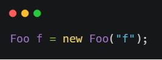
Đoạn trên có thể giải thích như sau:

Biến f mà chúng ta luôn nghĩ là đối tượng thực trong bộ nhớ thực ra không phải, nó chỉ là tham chiếu đến đối tượng ở bên trong ô nhớ.
Và trên thực tế là khi bạn pass một Reference Type vào một function, ta ví dụ là ta truyền f vào thì chương trình sẽ tạo ra một reference khác (tạm gọi là a)và link nó đến cùng đối tượng mà f trỏ vào, hay nói cách khác, nó copy reference f
Ví dụ ta có hàm
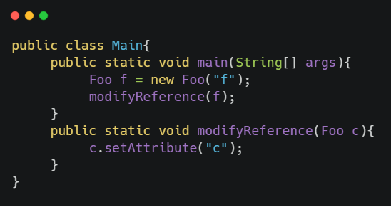
thì có thể được hiểu là
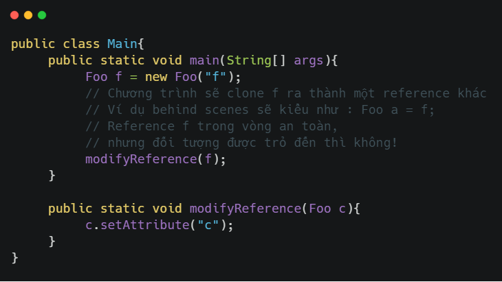
lúc này sẽ có 2 reference a và f cùng trỏ đến một object, khi ta thay đổi bất kỳ reference nào thì object cũng được thay đổi theo
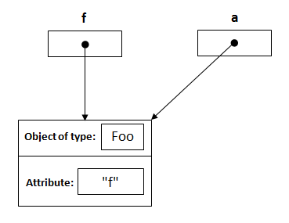
và khi function modifyReference chạy xong
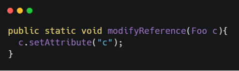
reference a(clone từ f) tạm coi là biến mất do đã ra ngoài function, lúc này chỉ còn f và đối tượng Foo đã được thay đổi
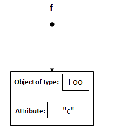
Nghe có vẻ giống Pass-by-reference, nhưng sự thật là không. Phương pháp này của Java không phải Pass-by-reference, nó nên được hiểu là Pass-by-value reference, chương trình không thực sự pass chính xác reference f vào function modifyReference, mà chương trình chỉ pass cái clone của nó(reference a) vào mà thôi. Giờ thì nghe giống Pass-by-value chưa!
Để dễ hình dung, ta có ví dụ sau:
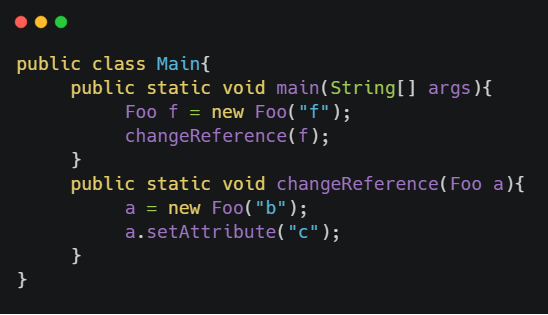
Trước tiên, khi pass f vào changeReference, ta vẫn được kết quả như trên đã mô tả, chương trình sẽ clone reference f ra một reference khác và tất nhiên là cùng trỏ đến đối tượng Foo của f
và tiếp phần hay là ta gán a sang một đối tượng Foo khác, theo như Pass-by-reference của C/C++/C# mà ta đã bàn ở trên thì việc này sẽ khiến đối tượng gốc cũng bị thay đổi, cùng xem lại với C#
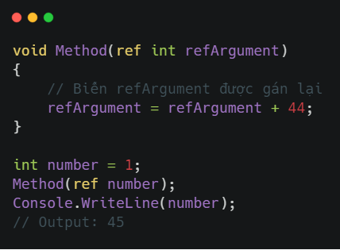
Nhưng, Java không làm việc như vậy, khi bạn sẩy chân gán lại reference a sang một đối tượng Foo khác, bạn sẽ không thể nào quay đầu được.
khi thay đổi a, đổi attribute từ “b” sang “c”
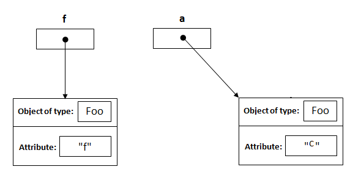
Vấn đề trên tưởng như đơn giản nhưng rất nhiều người không biết và vẫn “ngã ngựa”
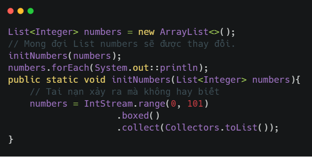
Đó cũng là lý do vì sao các linter trong các ngôn ngữ như Java, Python, Javascript,… đều warning mỗi khi bạn gán lại argument của function và việc thay đổi attribute của đối tượng bên trong function cũng là cực kỳ nên tránh
Nên tránh
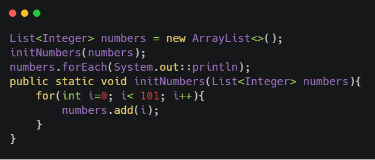
Thay vào đó nên tạo ra một list mới và tránh thay đổi list cũ
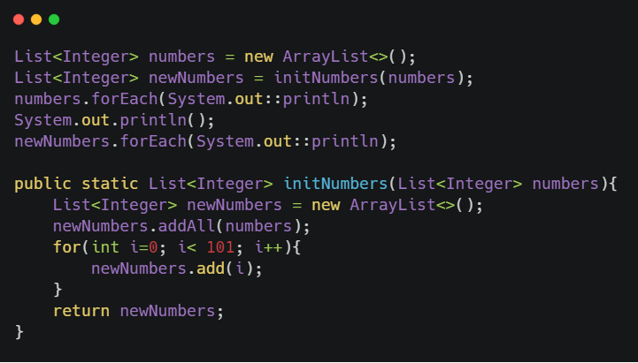
Kết luận
Có thể bạn nghĩ rằng khi đổi attribute của reference thì đối tượng thực tế cũng đổi, nó chính là Pass-by-reference, vậy Java có nó. Thật ra điều đó không quan trọng. Java có Pass-by-reference hay không? Câu này đối với dev, nó cũng vô nghĩa như câu Java có phải ngôn ngữ thuần hướng đối tượng(purely Object-Oriented Language) hay không! Vì khái niệm vẫn chỉ là khái niệm, học thuộc khái niệm không giúp bạn code tốt hơn, hãy hiểu bản chất, hiểu cú pháp hơn là tranh cãi mấy điều vô bổ.
Reference
https://www.mathwarehouse.com/programming/passing-by-value-vs-by-reference-visual-explanation.php https://www.javaworld.com/article/2077424/learn-java-does-java-pass-by-reference-or-pass-by-value.html